Инструкция для того, кто наполняет сайт: тексты, фото, плитки, страны, оплата.
Как читать. На картинках красные кружки с цифрами 123. Под картинкой или рядом — те же цифры и что это за элемент. Нашли кружок на экране — прочитали строку с той же цифрой.
На картинках тестовый сайт «Обители» (монастыри Грузии, Сербии, Греции). На вашем сайте будут свои названия и фото, а кнопки и поля те же.
Как устроен сайт
Вход
Экран админки
Дерево сайта
Добавить, скрыть, удалить
Превью и сохранение
Блок Текст
Блок Фото и редактор фото
Блок Плитки и плитка
Вина
Карта
Оплата
Услуга
Табы (страны)
Шапка и подвал
Настройки сайта
Частые задачи
Если что-то не так
Словарь
Админка сайта-ленты, версия 2.0 · снимки с макета админки · октябрь 2026
1. Как устроен сайт
Сайт собирается из блоков, как из кубиков. Блоки стоят сверху вниз. Что стоит выше в админке — то выше на сайте.
Блок
Что это на сайте
Сколько можно
Текст
Надзаголовок, заголовок, подзаголовок, текст
сколько угодно
Фото
Одна фотография с подписью
сколько угодно
Плитки
Сетка карточек с фото: монастыри, святыни, вина
сколько угодно
Услуга
Платная услуга: молебен, экскурсия. Кнопка ведёт на оплату
сколько угодно
Карта
Карта с отметками. Отметки ставятся сами
одна на страницу
Оплата
Полоса с кнопкой «Пожертвовать» или «Поддержать»
одна на страницу
Табы
Страны над лентой: Грузия · Сербия · Греция
один на сайт, только на главной, последним
Плитка — карточка с фото и названием. Её нажимают, и она открывается одним из двух способов:
Развернуть всё / Свернуть. Открыть или закрыть все ветки дерева.
Точка у плитки на странице плитки: ● фото есть, ○ фото нет.
5. Добавить, скрыть, удалить
Добавить блок
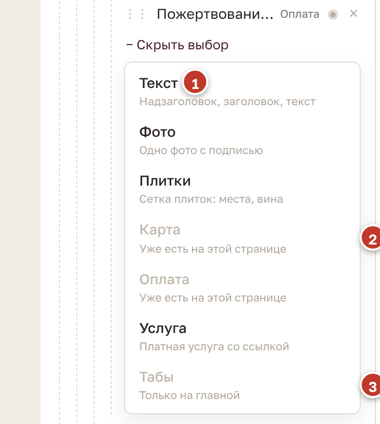
Нажмите «+ Добавить блок» в конце нужной страницы. Откроется список.
Доступный блок. Под названием — подсказка, что это.
Серый: «Уже есть на этой странице». Карта и Оплата бывают только по одной.
Серый: «Только на главной». Табы нельзя поставить на страницу плитки.
Новый блок встаёт в конец страницы (на главной — над Табами) и сразу открывается в форме.
Добавили первый блок на страницу плитки — плитка теперь открывается страницей, значок меняется на →.
Скрыть
Кружок ◉ в строке дерева или галочка «Показывать на сайте» вверху формы. Скрытое посетители не видят, а данные остаются. Удобно, чтобы подготовить плитку заранее.
Удалить
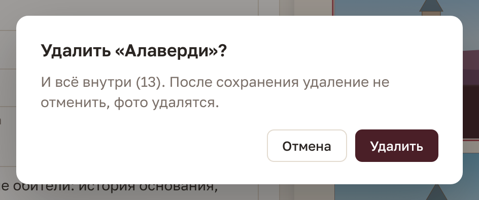
Кнопка ✕ в дереве или «Удалить» внизу формы. Админка спрашивает подтверждение и пишет, сколько удалится вместе с элементом.
До нажатия «Сохранить» удаление можно отменить: обновите страницу браузера, несохранённые правки пропадут. После сохранения удаление не отменить, фото удаляются.
Шапку, подвал и настройки удалить нельзя, их только скрывают.
6. Превью и сохранение
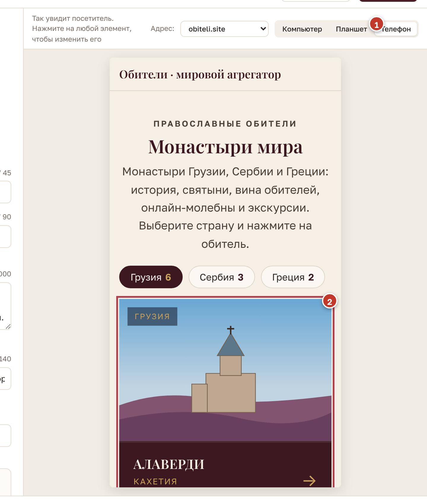
Телефон. Превью сжалось до ширины телефона. Проверьте, что всё читается.
Выбранное. То, что открыто в форме, обведено рамкой.
Превью показывает правки сразу, ещё до сохранения. В превью можно нажимать плитки, табы, кнопки: страницы и окна открываются прямо в нём, сайт не уходит в новую вкладку.
Сохранение
Поменяли что-то — статус вверху становится «Есть несохранённые изменения».
Нажмите «Сохранить» (или Ctrl + S).
Статус «Все изменения сохранены» — правки уже на сайте. Черновиков нет.
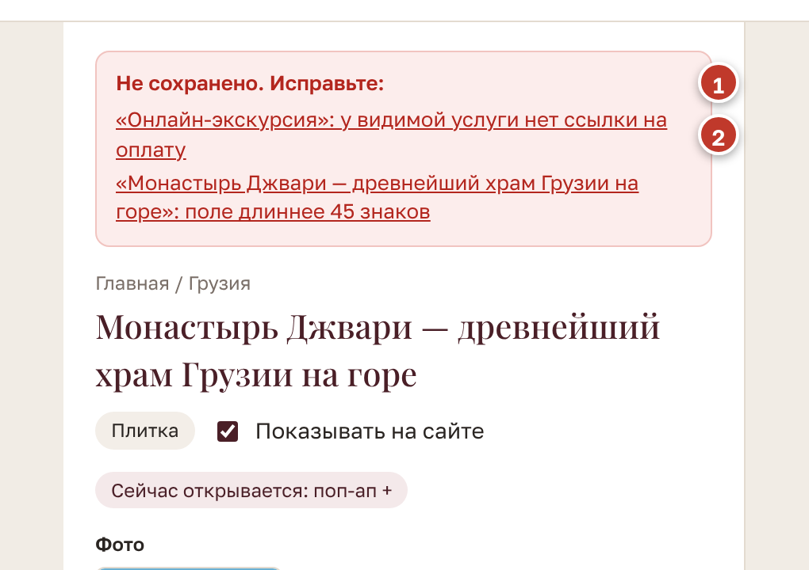
Если что-то заполнено неправильно, сайт не сохраняется целиком, пока не исправите.
Список ошибок над формой.
Нажмите на ошибку — откроется нужная плитка или блок.
Красный счётчик — текст длиннее, чем можно. Сократите.
Закрываете вкладку с несохранёнными правками — браузер переспросит. Правки, которые не сохранили, пропадают.
7. Блок Текст
Заголовки и абзацы. Все поля необязательные: пустое поле на сайте просто не видно.
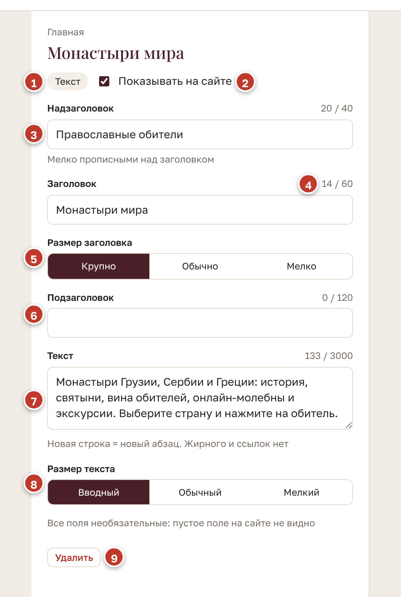
Тип того, что открыто в форме.
Показывать на сайте. Снимите галочку, чтобы скрыть. Есть в каждой форме.
Надзаголовок — мелко прописными над заголовком, до 40 знаков.
Счётчик: сколько знаков набрано и сколько можно. Красный — слишком длинно.
Размер заголовка: крупно, обычно, мелко.
Подзаголовок под заголовком, до 120 знаков.
Текст до 3000 знаков. Каждая новая строка — новый абзац. Жирного и ссылок нет.
Размер текста: вводный (крупнее), обычный, мелкий.
Удалить блок.
Так этот блок выглядит на сайте (цифры те же):
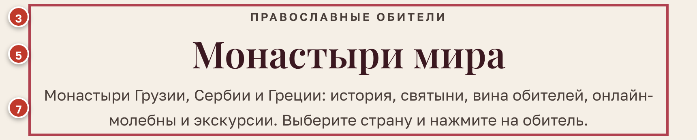
Первый заголовок главной — главный для поисковиков. Пишите в нём, о чём сайт.
8. Блок Фото и редактор фото
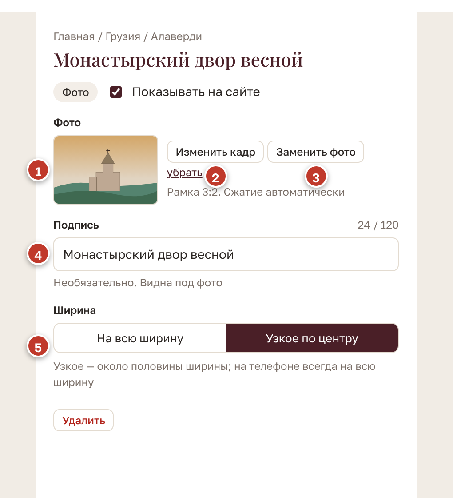
Миниатюра — как фото обрезано сейчас.
Изменить кадр — открыть редактор и подвинуть рамку. Исходное фото хранится целиком.
Заменить фото — загрузить другое. Тексты не меняются. «убрать» — оставить без фото.
Подпись под фото, до 120 знаков, необязательно.
Ширина: на всю ширину или узкое по центру. На телефоне фото всегда на всю ширину.
Редактор фото
Открывается после загрузки фото и по кнопке «Изменить кадр». Он одинаковый для плиток, вин и блока Фото.
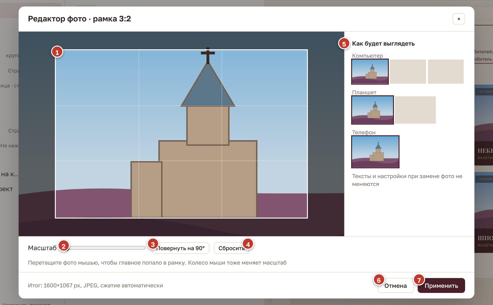
Рамка. Неподвижна. Всё, что внутри, попадёт на сайт. Двигайте фото мышью, чтобы главное было в рамке.
Масштаб от 1 до 4. Колесо мыши тоже приближает.
Повернуть на 90°, если фото снято боком.
Сбросить — вернуть как было.
Как будет выглядеть на компьютере, планшете и телефоне.
Отмена — закрыть без изменений.
Применить — сохранить кадр.
Рамка бывает горизонтальная 3:2 (плитки, блок Фото) и вертикальная 4:5 (вина и плитки с вертикальными фото). Подходят JPEG, PNG, WebP до 20 МБ. Если фото маленькое, админка предупредит: на большом экране оно может быть нечётким.
9. Блок Плитки
Блок Плитки — это сетка. Сами плитки лежат внутри него (в дереве — под ним).
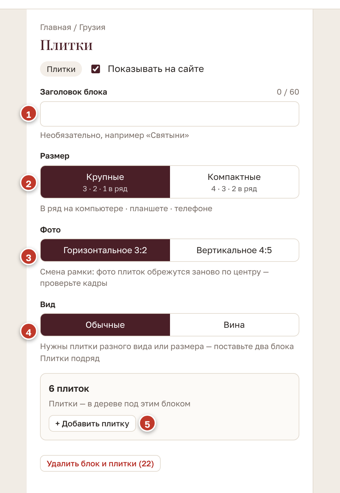
Заголовок блока над сеткой, например «Святыни». Необязательно.
Размер. Крупные: 3 в ряд на компьютере, 2 на планшете, 1 на телефоне. Компактные: 4 · 3 · 2.
Фото: горизонтальное 3:2 или вертикальное 4:5. Поменяли — проверьте кадры, фото обрежутся заново по центру.
Вид: обычные плитки или вина.
+ Добавить плитку в конец блока.
Все плитки в блоке одного размера. Нужны разные — поставьте два блока Плитки подряд.
Плитки на сайте
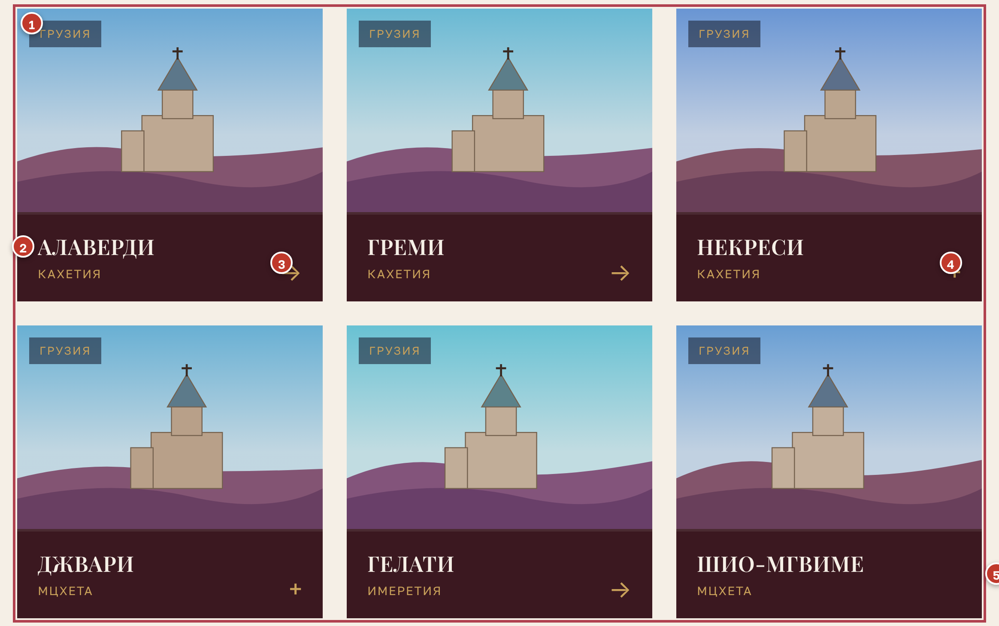
Бейдж страны — подпись таба. Появляется сам.
Название и подпись. Не больше двух строк, дальше многоточие.
→ откроется страница плитки.
+ откроется поп-ап.
Нет значка — плитка не нажимается: у неё нет ни текста, ни «Как добраться».
10. Плитка
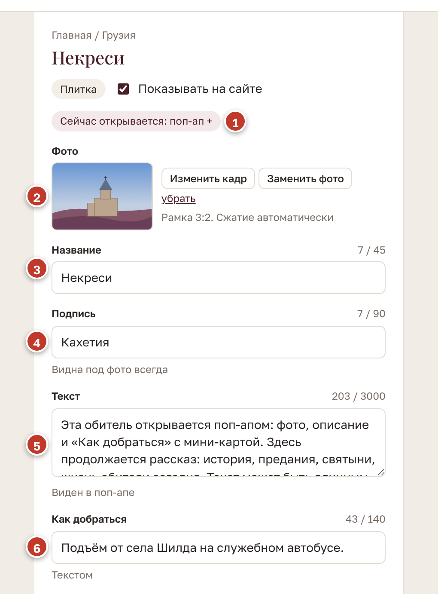
Сейчас открывается: поп-ап, страница, статичная страница или «не нажимается». Меняется само.
Фото — как в разделе 8. Рамка берётся из настроек блока.
Название, до 45 знаков.
Подпись под названием, до 90. Видна всегда, например «Кахетия».
Текст до 3000. В поп-апе или наверху страницы плитки.
Как добраться — словами, до 140 знаков.
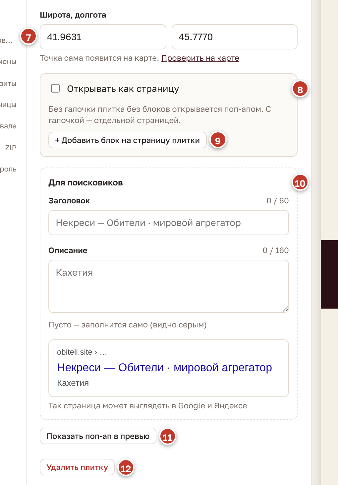
Широта и долгота, например 42.0325 и 45.3771. Точка сама появится на карте. Взять координаты: в Google Картах нажмите правой кнопкой на место и скопируйте числа. «Проверить на карте» — открыть точку.
Открывать как страницу. Без галочки плитка без блоков открывается поп-апом. С галочкой — отдельной страницей. Есть только у плиток на главной.
+ Добавить блок на страницу плитки. С первым блоком плитка станет страницей.
Для поисковиков. Заголовок (60) и описание (160) для Google и Яндекса. Пусто — заполнится само, серым показано как.
Показать в превью поп-ап или страницу плитки.
Удалить плитку. Вместе со всем, что на её странице.
11. Поп-ап и страница плитки
Поп-ап (значок +)
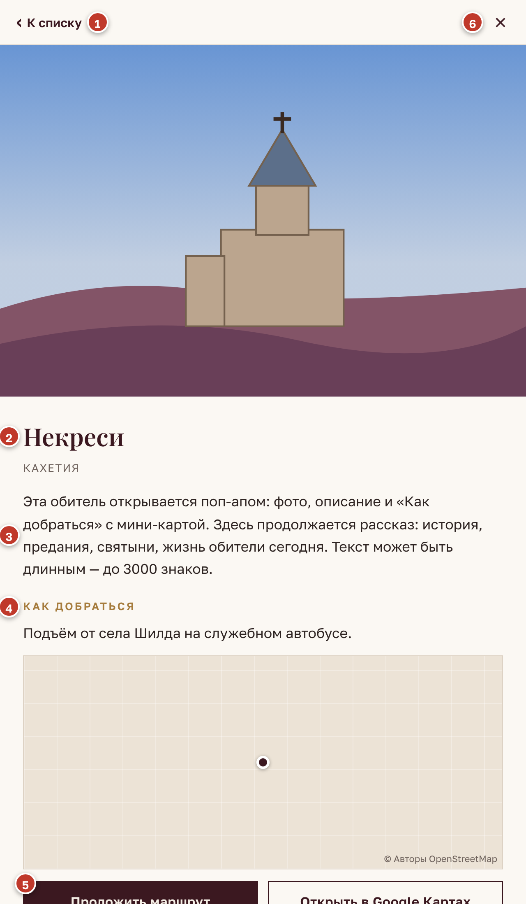
‹ К списку — закрыть и вернуться на то же место.
Название и подпись плитки.
Текст плитки.
Как добраться и мини-карта, если есть координаты.
Проложить маршрут и Открыть в картах. Google или Яндекс — выбирается в настройках таба.
× — закрыть. На телефоне крестика нет, там «К списку».
Страница плитки (значок →)
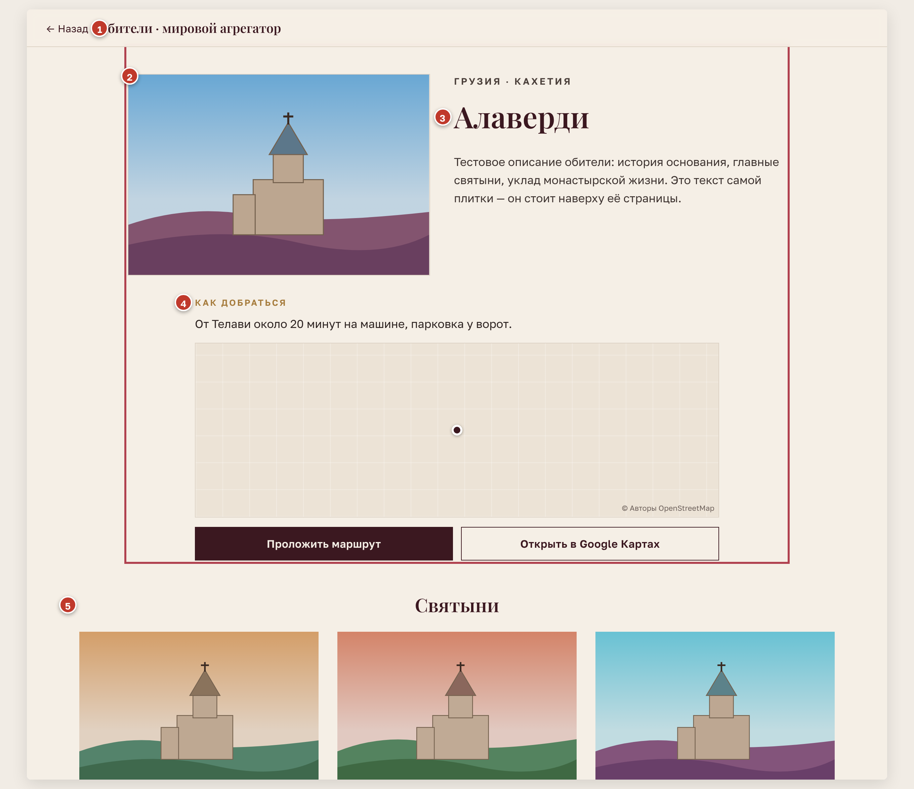
← Назад — на главную.
Фото плитки.
Название и текст плитки.
Как добраться с мини-картой.
Блоки страницы — всё, что добавлено внутрь плитки в дереве.
Если блоков нет, но стоит галочка «Открывать как страницу», будет статичная страница: только верх из самой плитки.
12. Вина
Вина — это блок Плитки с видом «Вина». Вино всегда открывается поп-апом. Кнопок «Купить» и «В корзину» нет.
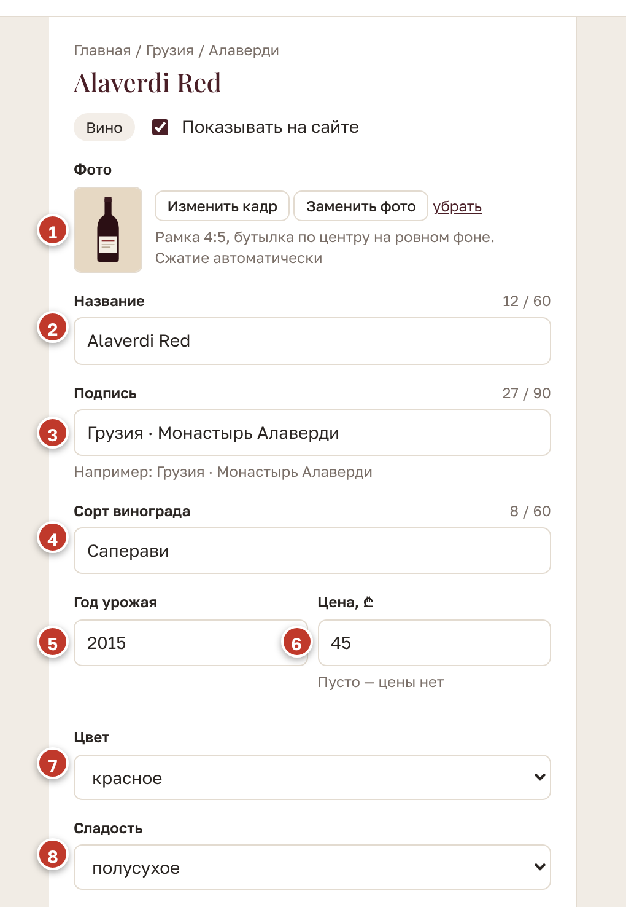
Фото бутылки, рамка 4:5. Лучше бутылка по центру на ровном фоне.
Название, до 60.
Сорт винограда, до 60.
Год урожая.
Цена в валюте таба. Пусто — цены нет.
Цвет: красное, белое, розовое, янтарное.
Сладость: сухое, полусухое, полусладкое, сладкое.
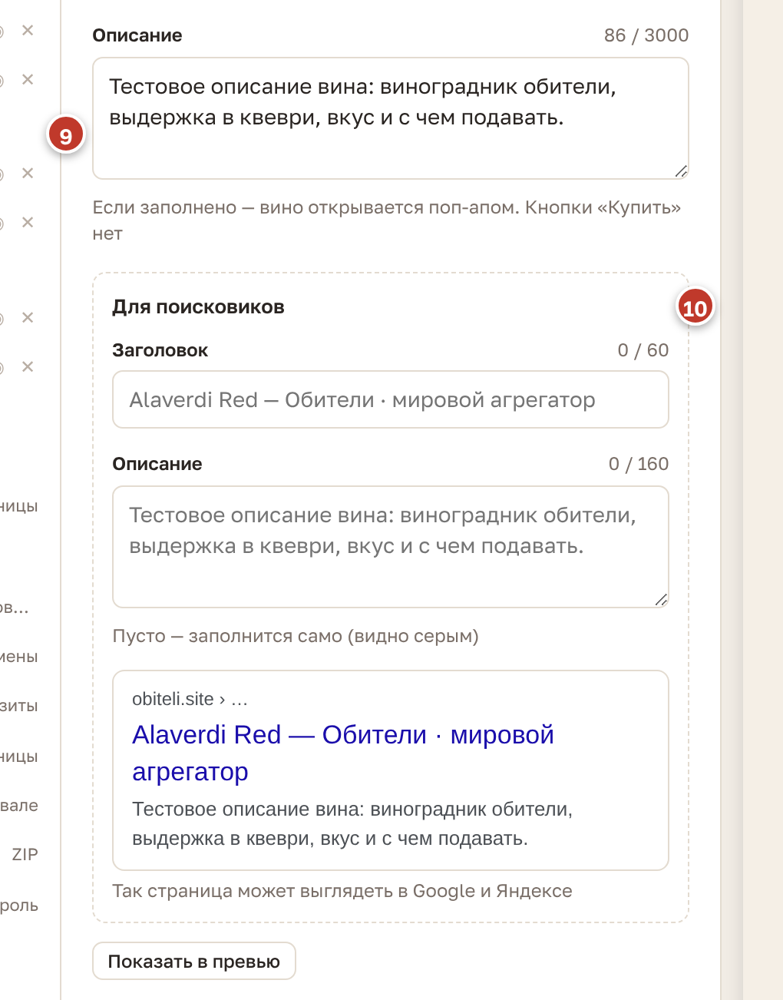
Описание до 3000. Заполнено — вино открывается поп-апом. Пусто — не нажимается.
Для поисковиков — как у плитки.
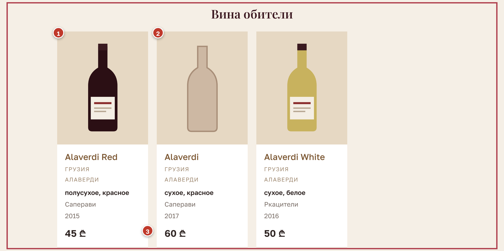
Вино с фото и описанием — нажимается.
Без фото — серый силуэт бутылки. Без описания не нажимается.
Цена. Все цены вин таба можно скрыть одной галочкой в настройках таба.
13. Карта
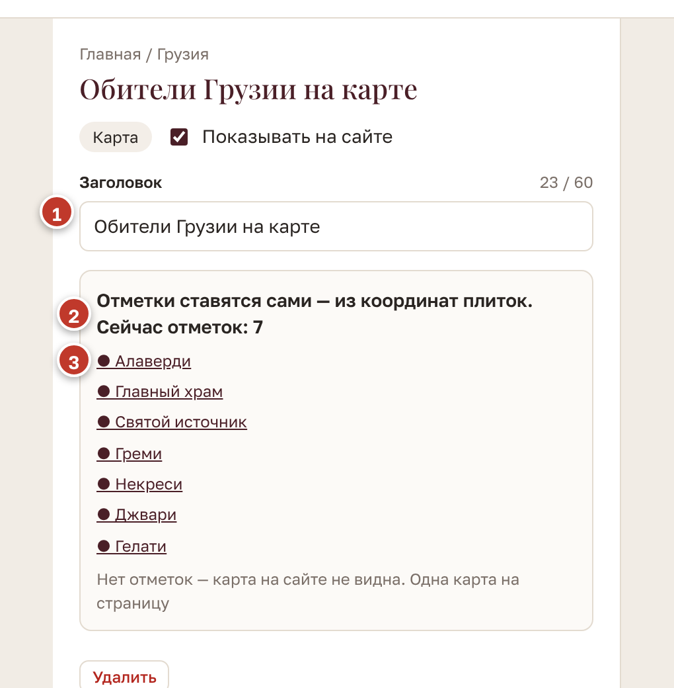
Заголовок над картой.
Сколько отметок. Отметки ставятся сами из плиток, у которых есть широта и долгота.
Список отметок. Нажмите — откроется плитка, можно поправить координаты.
На главной карта показывает плитки ленты (с табами — активного таба) и плитки их страниц. На странице плитки — только плитки этой страницы. Нет ни одной отметки — карты на сайте не видно.
Заголовок полосы, например «Пожертвование монастырю».
Текст рядом, до 300.
Текст кнопки, например «Пожертвовать».
Кому идут деньги. Посетитель видит это в окне оплаты.
⋮⋮ Порядок способов. Как здесь, так и кнопки на сайте. Первая кнопка выделена.
Галочка — способ включён.
✕ — убрать способ.
+ Способ (внизу списка) — добавить из справочника: СБП, Flitt, Bank of Georgia, QR-код, реквизиты, своя ссылка и другие. QR и реквизиты — по одному.
Каждую ссылку и QR-код проверьте перед включением: получатель и счёт должны быть правильные. Без включённых способов полосы оплаты на сайте не видно.
Окно оплаты на сайте
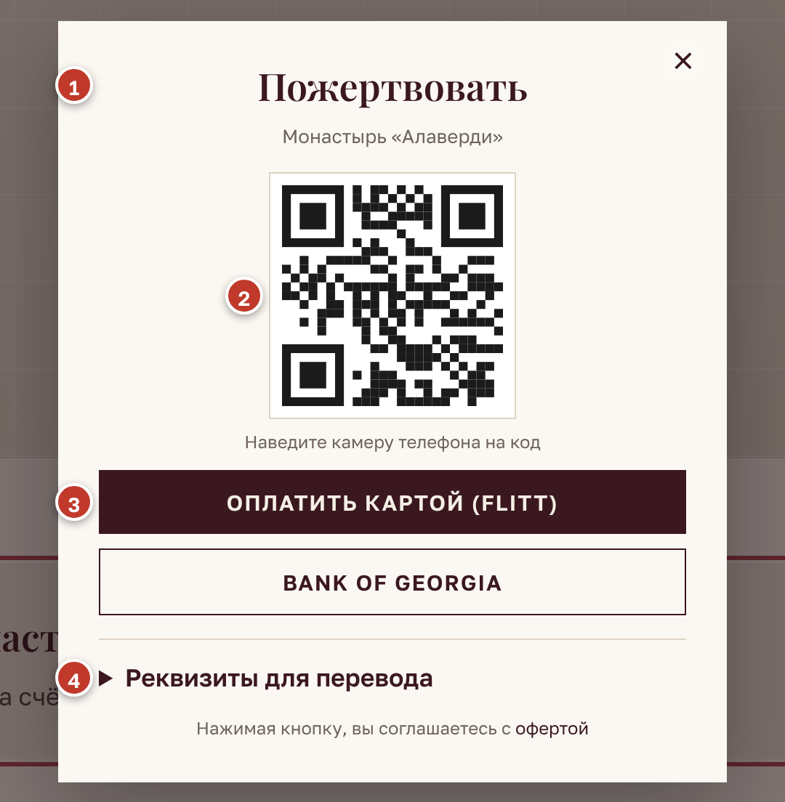
Заголовок = текст кнопки, под ним «Кому идут деньги».
QR-код. Наводят камеру телефона.
Кнопки платёжных сервисов. Открывают оплату в новой вкладке.
Реквизиты для перевода — раскрываются по нажатию, есть «Скопировать».
15. Услуга
Платная услуга с ценой и кнопкой. Несколько услуг подряд встают в две колонки.
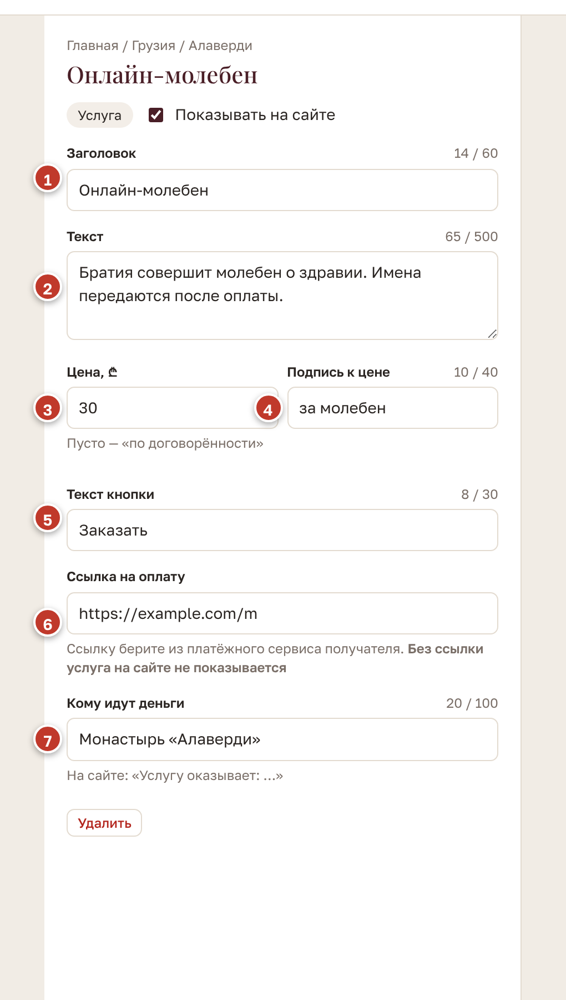
Заголовок, до 60.
Текст, до 500.
Цена числом. Пусто — «по договорённости». Валюта — из таба.
Подпись к цене: «за молебен», «за участника».
Текст кнопки, обычно «Заказать».
Ссылка на оплату из платёжного сервиса получателя. Без ссылки услуга на сайте не видна.
Кому идут деньги. На сайте: «Услугу оказывает: …».
16. Табы (страны)
Табы нужны, когда на одном сайте несколько стран. У каждого таба своя лента блоков и свои настройки: валюта, владелец, реквизиты.
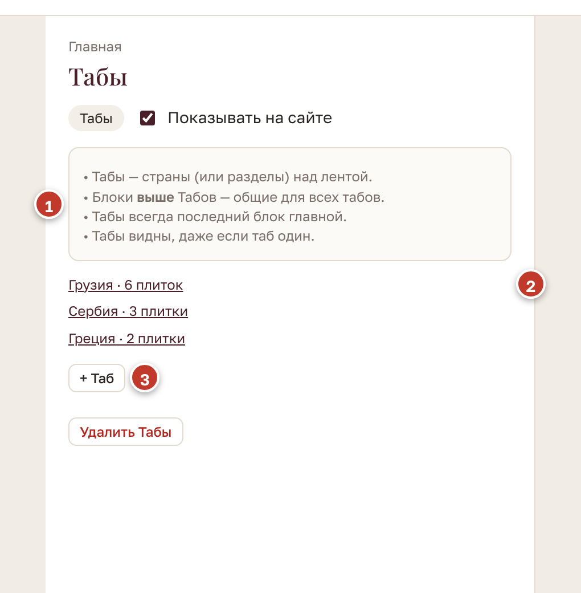
Правила. Блоки выше Табов видны на всех табах. Табы всегда последний блок главной.
Список табов. Нажмите, чтобы открыть таб.
+ Таб. Новый таб создаётся скрытым: заполните и включите «Показывать на сайте».
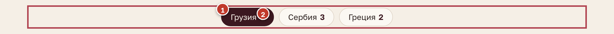
Активный таб залит цветом.
Число — сколько плиток в табе.
Настройки таба
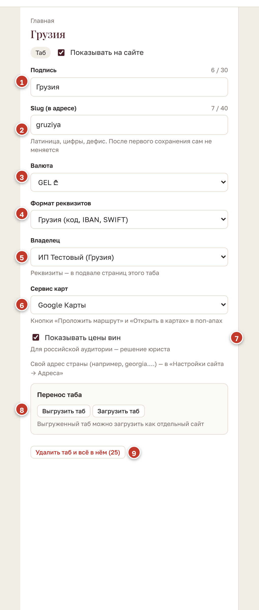
Подпись таба, до 30.
Slug — слово в адресе: obiteli.site/gruziya. Латиница, цифры, дефис. После первого сохранения сам не меняется.
Валюта цен и услуг.
Формат реквизитов: Россия, Грузия или другой.
Владелец. Его реквизиты в подвале страниц таба.
Сервис карт: Google или Яндекс.
Показывать цены вин. Для российской аудитории — решение юриста.
Перенос таба. Выгрузить таб в ZIP или загрузить таб из ZIP (добавится скрытым).
Удалить таб и всё в нём.
Добавляете Табы на главную, где уже есть блоки, — админка спросит: сделать эти блоки первым табом или оставить общими над табами. Удалить Табы можно, только когда остался один таб.
17. Шапка и подвал
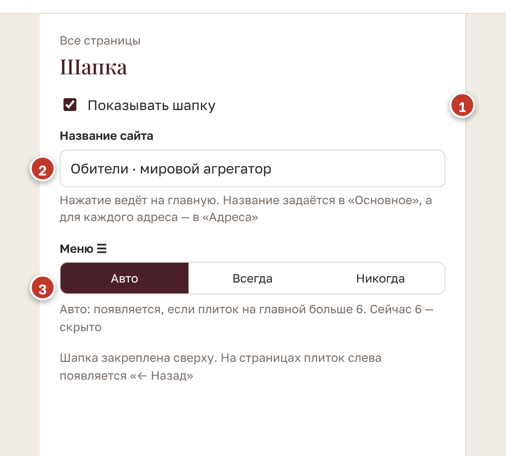
Показывать шапку.
Название сайта слева в шапке. Меняется в «Настройки сайта → Основное», а для отдельного адреса — в «Адреса».
Меню ☰. «Авто» — появляется, если плиток на главной больше 6. «Всегда» или «Никогда».
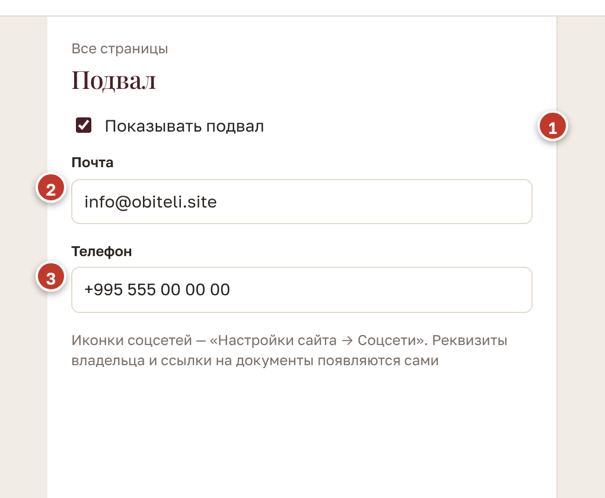
Показывать подвал.
Почта.
Телефон.
Иконки соцсетей, реквизиты владельца и ссылки на документы появляются в подвале сами из настроек сайта.
18. Настройки сайта
Основное
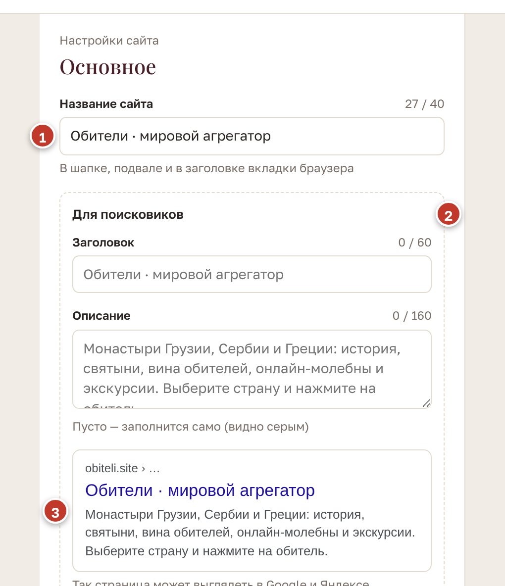
Название сайта — в шапке, подвале и на вкладке браузера.
Для поисковиков — заголовок и описание главной.
Так главная может выглядеть в Google и Яндексе.
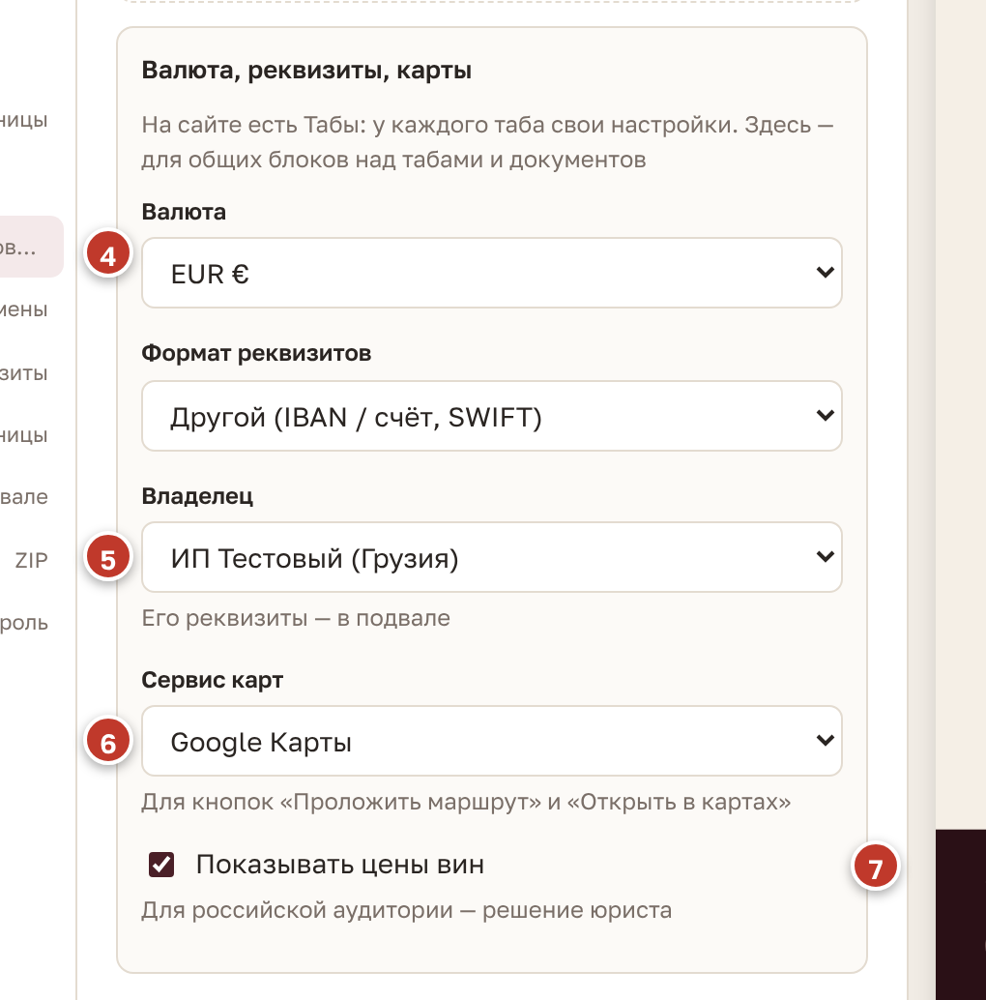
Валюта.
Владелец — чьи реквизиты в подвале.
Сервис карт.
Показывать цены вин.
Если на сайте есть Табы, эти настройки у каждого таба свои. Здесь они только для общих блоков над табами и для документов.
Адреса
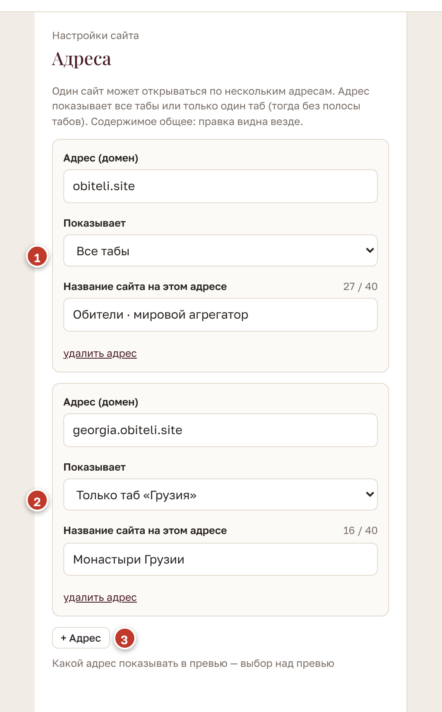
Один сайт может открываться по нескольким адресам. Правка видна на всех сразу.
Общий адрес показывает все табы.
Адрес страны показывает один таб: без полосы табов и без общих блоков. У адреса своё название сайта.
+ Адрес. Сам домен подключает тот, кто обслуживает хостинг.
Соцсети
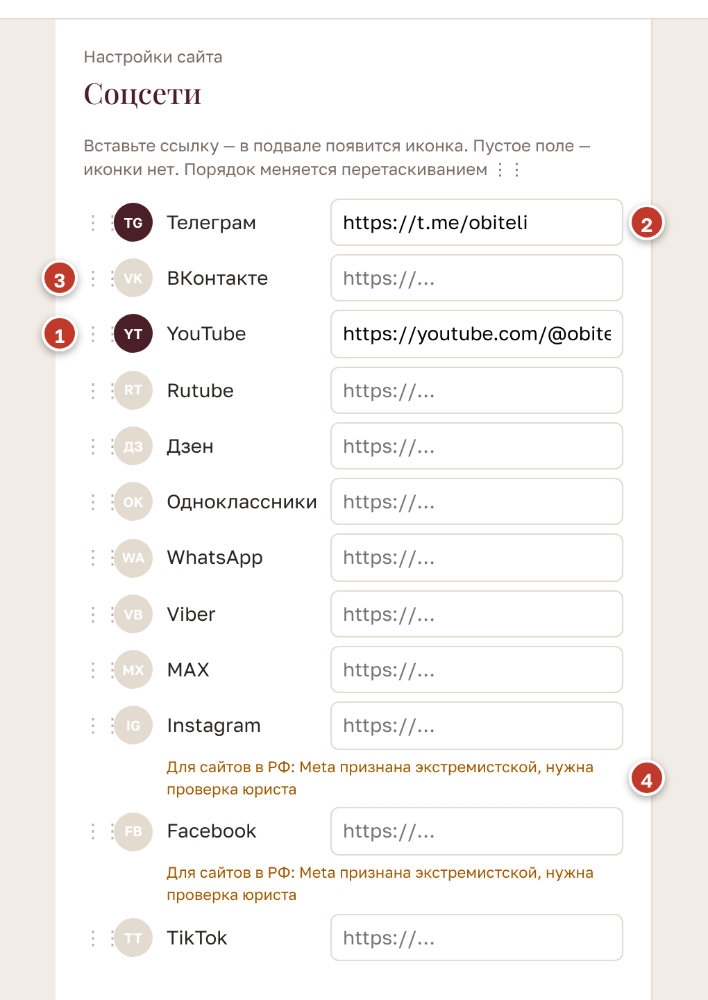
⋮⋮ Порядок иконок в подвале.
Ссылка. Вставили — в подвале появилась иконка.
Пустое поле — иконки нет, в админке она бледная.
Предупреждение про Instagram и Facebook для сайтов в России.
Выгрузка и загрузка
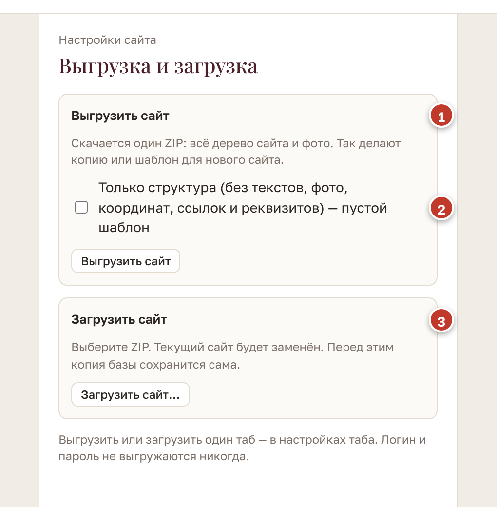
Выгрузить сайт — скачать один ZIP: всё дерево и фото. Это копия сайта или заготовка для нового.
Только структура — ZIP без текстов, фото, координат, ссылок и реквизитов. Получается пустой шаблон с теми же блоками.
Загрузить сайт из ZIP. Текущий сайт заменится. Перед этим админка сама сохранит копию.
Владельцы
Кто получает деньги: название, страна, ИНН или код, ОГРНИП, адрес, почта. Реквизиты владельца видны в подвале — этого требуют платёжные сервисы. Владельца выбирают в настройках таба (или в «Основное», если табов нет).
Документы и cookies
Три страницы: Оферта, Политика персональных данных, Cookies. У каждой галочка «Показывать на сайте», заголовок и текст. Ссылки на них появляются в подвале. Отдельная галочка включает полосу «Сайт использует cookies» внизу сайта. Тексты документов согласуйте с юристом.
Вход
Смена логина и пароля админки. Логин и пароль не попадают в выгрузку сайта.
19. Частые задачи
Добавить новый монастырь (плитку)
В дереве раскройте нужный таб и блок Плитки.
Нажмите «+ Добавить плитку». Новая плитка встанет в конец и откроется в форме.